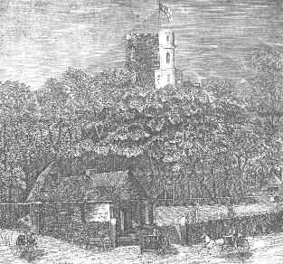

|
In 125 years of existence, La Société Jersiaise has been responsible not only for the preservation of many Island landmarks but also for the destruction of a major artistic and historic monument - the Prince's Tower. An early manifestation of Gothic Revival, constructed soon after the completion of Hugh Walpole's influential Strawberry Hill, and one of the few examples of the full-blown Romantic sensibility in Jersey, the Tower was noted in many early guidebooks as a must-see. James d'Auvergne, the builder of the tower, had been a Royal equerry in London around the time of the building of Strawberry Hill, and it is tempting to speculate that, even if he might not have visited Strawberry Hill itself, it would certainly have been discussed among the enlightened circles in which he moved in the capital. Besides being an important artefact of the Gothic Revival, the Prince's Tower is intimately linked with the life of James d'Auvergne's nephew, Philippe. One of Jersey's most Romantic heroes and the only Jerseyman to become head of a sovereign state, Philippe d'Auvergne's connection with the building would elsewhere surely have ensured the building's preservation. The aspect of the sublime represented by the Prince's Tower typified Romanticism's appeal to heightened experience through elevation, antiquity, folklore, the wild, the fantastic, the elemental and the grotesque. By the beginning of the 20th Century, taste had changed, Romanticism was reviled, and La Société determined to demolish the Tower to allow swift excavation of the mound. Despite the fact that the antiquarianism of the Tower's builder was a forerunner of La Société's founders' interest in Jersey's history and culture, and heedless that the collection of curiosities contained within the Tower was a predecessor of the Museum founded by La Société, the Tower was unceremoniously pulled down without any seeming attempt to record the historic and artistic features of the monument. The long-accepted story was that the Tower was in imminent danger of collapse. The documents unearthed by the Art & Photographic History Section of La Société Jersiaise might suggest otherwise. Read the descriptions, look at the pictures, study the engineers' report and make up your own mind: would you have demolished the Prince's Tower? |
Le Comité a pris en considération le rapport de cinq architectes et ingénieurs civils, tous membres de la Société, qui ont bien voulu examiner comme experts l'état actuel des édifices qui sont construits sur le tumulus de la Hougue Bie, dont la teneur suit:-
Report as to the structural safety of La Hougue Bie.
To the Secretaries of La Société Jersiaise.
Sirs,
As requested, we have visited and examined the building known as La Hougue Bie and have taken into consideration the four questions submitted to us by you, viz.:-
(1). To what extent are the towers safe?
(2). Do the towers militate against the preservation and a satisfactory restoration of the chapel and crypt, and to what extent?
(3). If it were decided to retain the towers, what would be the approximate expense of ensuring their safety, prior to carrying out a restoration of the chapel and crypt?
(4). Would it be safe to explore the mound with the superincumbent weight of the crypt, chapel and towers as they are to-day?
After full consideration, we are unanimously of opinion that the answers to your questions are as follows:-
(1). The towers, in themselves, are sound but the risk lies in the old substructures carrying their weight.
(2). From a purely architectural point of view it is impossible to restore the chapel satisfactorily if the towers are retained: they are of no architectural interest and are a poor example of their own period. They militate directly against preservation as they are gradually and certainly subjecting the substructure to strains for which it was not designed, and, if retained, it may become a matter of urgency to undertake extensive structural repairs for the strengthening of the substructure.
(3). As pointed out in (2) the satisfactory restoration of the chapels cannot be carried out if the towers are retained, and, from any examination it is possible to make at present, no reliable estimate can be given of the extra cost which would be entailed by retaining them.
(4). We consider it quite unsafe to explore the mound with the buildings in their present condition. In any case exploration should be so conducted as to avoid subsidence, but should any occur, it would have far less serious results if the towers had been removed beforehand,
We suggest that if exploration is to be done, the course to be followed should be (1) remove towers. (2) explore cautiously and (3) restore chapels after consolidating the exploration workings if necessary.
The towers referred to above are the two circular towers only, as the octagon tower containing the lower flight of the staircase stands on its own foundations which are entirely outside the chapel and crypt.
We are, yours obediently,
Thomas H. Sladdin, F.R.I.B.A., Edmund BERTEAU, C.E., Alfred J JENKINS, P. A. AUBIN, G. A. KEILEY.
En présence de ce rapport le Comité, d'opinion uniforme, est arrivé à la conclusion qu'il serait utile et nécessaire de faire démolir les tours qui reposent sur les voûtes de la chapelle et de la crypte; et décide de soumettre cette recommandation à la prochaine réunion trimestrielle des membres, afin d'obtenir sa confirmation, s'il y a lieu.
Octobre 27 Réunion Trimestrielle:-
Sous la présidence de O. C. Powell Ecr. (Président).
...M. Ed. Toulmin Nicolle donna ensuite lecture d'une notice sur la Hougue Bie.
Après quoi la réunion prit en considération la recommandation du Comité Exécutif à l'effet de faire démolir les tours de la Hougue Bie pour les raisons énoncées dans le rapport des Architectes. (Voir ci-dessus).
Lecture faite de ce rapport et après une discussion approfondie de la question, F. J. Bois Ecr. fit et Thomas Payn Ecr. seconda une proposition d'approuver en principe la recommandation du Comité Exécutif de faire démolir les tours de la Hougue Bie dans le but d'assurer la conservation des chapelles; ledit Comité étant autorisé à faire les démarches préliminaires pour y donner effet, dont rapport sera définitivement fait à une réunion générale des membres.
Cette motion mise aux voix fut adoptée par la réunion (un seul membre votant contre).
Annual Bulletin 1922
L'évènement principal de l'année est l'acquisition de la propriété "La Hougue Bie". Quoique cette acquisition puisse imposer à l'avenir un certain fardeau sur les ressources de la Société, votre Comité a bien compris l'importance d'assurer la conservation de ce monument historique, peut-être même pré-historique, et décida sous sa propre responsabilité de faire les démarches nécessaires afin que la Société devienne son gardien perpétuel. La réunion générale des membres ratifia unanimement l'achat et le contrat fut passé le 30 Août. Le prix est de la somme de £750: dont £581.15.0. en rentes, £100 en hypothèque judiciaire et la balance de £68 en espèces; mais la Société est tenue par la loi et dans le courant d'une année de la date du contrat translatif d'affranchir la propriété de telle partie des rentes qui excède la moitié du prix; c'est-à-dire de la somme de £206.15.0. Afin de faire face à ces engagements, votre Comité a ouvert une souscription parmi les membres, qui a rapporté jusqu'à présent la somme de £122.17.0, montant insuffisant. Votre Comité, qui avait espéré ne pas être obligé d'empiéter sur les fonds généraux de la Société, vient donc faire appel aux membres, qui n'ont pas déjà souscrit, en les priant de venir en aide pour combler l'écart.
Le lierre qui à certains endroits couvrait les murs de la chapelle et de la Tour d'Auvergne, et qui était très nuisible à ces édifices, a été enlevé et votre Comité espère sous peu pouvoir entreprendre la restauration de la chapelle, et la consolidation de la tour, par mesure de précaution, car rien n'indique qu'elle soit en danger.
Annual Bulletin 1920
Rather more than two miles from St. Helier's is the Prince's Tower, or La Hogue Bie. It is built on a mound and commands extensive views of the island and coast; it is a curious little old tower, containing a hall, kitchen, library, and two or three other rooms. It is so completely encircled by trees that till quite close it can hardly be discerned, except just its summit with a flag-staff rising from it. It is called the Prince's Tower from having belonged to the Prince de Bouillon, who was an Admiral of England, and a resident in Jersey for many years. There was, however, a much more ancient building on the same site, supposed to have been a chapel, erected by a pious Lady de Hambye, in consequence of the following misfortune having befallen her husband...
The Channel Islands Rooke 1857
...and then bearing onward and to the right till you arrive at a remarkable-looking tower on your left hand, based on a high tree-encircled mound, and nearly covered with clustering ivy. This is called, in the insular vernacular, La Hougue Bie: but in English, "Prince's Tower." For sixpence-halfpenny, Jersey currency (alias, for a "British sixpence") you become entitled to the enviable privilege of ascending it, and of obtaining from its summit a charming sort of bird's-eye view of the entire Island, with the exception of the high coasts to the west and north. You will here be tolerably well convinced of the fact of your being placed in the middle of the sea upon a very limited piece of dry land indeed; and the fancy may probably cross you, that any rather unusual subterrene or inframarine disturbance of the elements might possibly leave nothing of your wonderfully important self, tower, island and all, but a little momentarily discolored salt-water, crested by a transient bubble or two, as your only epitaph. Such things have happened! - but the Jersey Authorities will not believe it.
The New Guide Book for Jersey and Guernsey Kandich 1842
The chief elevation of this kind, is called La Hogue Bie, but more generally known by the name of Prince's Tower; from the summit of which, the eye embraces almost the whole island. I have never failed to be delighted with the view from this spot, which is not only interesting, as at once laying open the whole character and extent of the island, but as being in itself, inexpressibly beautiful. Jersey appears like an extensive pleasure ground, - one immense park, thickly studded with trees; beautifully undulating, and dotted with cottages. Fertility is on every side seen meeting the sea: the fine curves of several of the bays may be distinctly traced, with their martello towers, and other more imposing defences. several of the larger valleys may be distinguished by the shadow which is thrown upon one side: while all around, the horizon is bounded by the blue sea, excepting towards the east, where the French coast is seen stretching in a wide curve towards the south and north; and which, in one direction, approaches so near to Jersey, that the white sea beach is distinctly seen; and in clear weather, even the towns that lie near to the coast may be discerned. The prospect is altogether most charming; and among: the many I have seen in my day, I know few that please me more.
The Channel Islands Inglis 1835
There is a new military road which branches off at the Five Oaks, and leads to Mount Orgueil Castle. Not far out of the road to the left is a pretty little whimsical building, called the Prince's Tower, from its having been about thirty years ago the property of the late Admiral D' Auvergne, the titular Duke of Bouillon, in France, and a native of this Island. It was enlarged and materially improved by his Serene Highness; but its principal recommendation is the view of the whole Island, and of a wide extent of the coast of France from its summit. The sea line of sands on that coast, as well as the tower of the Cathedral of Coutance, can be easily distinguished on a clear day. The building was originally an oratory, intended to represent the Holy Sepulchre at Jerusalem; and even now, in its present modernized state, it has still something of the religious house, as well as Castle, as there is a pretty room on the entrance called a chapel, above which is a room called a dining room, not capable of holding many guests indeed. It is however a most interesting spot, whose enchanting prospects may afford amusement, over and over again, after an agreeable walk from the town of St. Helier, from which it is not more than two miles distant. At present it is generally visited by the strangers who resort to the lsland. There is a neat habitation at the foot of the mount, on which the Tower has been erected, where refreshments may at all times be procured. An elegant ball room has also been built within these few years.
It is extremely to be regretted that some of the adjoining fields could not have been purchased, and laid out for its improvement, when it came in the possession of the late Duke of Bouillon, in 1797. The building therefore stands within the circumscribed space of three acres, but small as it is, so very well was it laid out by his Serene Highness that the very most that can be, is made of it, and so beautifully is it shaded from the summer heat, that it is admirably adapted for rural festivities of every kind. The business of a Guide is to shew to the traveller, places and things, as they are at .the moment. With this view, the foregoing account has been given of what, now, and for some time has obtained the name of the Prince's Tower. It is hardly fair, however, from its present appearance, to consider it as a mere place of amusement or fashionable resort, because it is still distinguished for its traditions of ancient days, and have been distinguished by the name of La Hougue Bie, the high harrow, or the sepulchral mound of Hambie.
Falle's New Guide to the Island of Jersey 1843
Nouvelle Chronique 16/5/1891
Grouville contains a pretty toy called la Hogue Bie, which is a circular tower about 100 feet high, built on an artificial mount about 20 or 30 more, standing in a copse of a few acres thickly planted with trees. The building contains five or six apartments, and from the summit, a varied and extensive prospect is obtained of the surrounding country and the opposite coast of France. It would make a charming summer-house, but it is untenantable from its dampness: when it rains the wet pours from the walls in streams, the building being of sea stone. A year or two ago some tons of lead were stripped from the roof, and rolled up, as the keeper tells, like a sheet of paper, by the violence of the wind. The building was erected, as tradition says, some hundreds of years ago, by the widow of a Norman nobleman, named De Hambie, to the memory of her husband, who was murdered on this spot by a treacherous servant: from this it is said to derive its name of Hogue-bie: Hogue, signifying a barrow, or mound, and bie, the termination of the murdered man's name, making, by a forced construction, indeed, Hambie's mound or monument. But it is better known among visitors now, as the "Prince's Tower," from having some years ago belonged to the Duke de Bouillon, a naval officer in the English service. It is turned into a sutling-house in the summer time, when the English visit it. Among the garden products of Jersey is tall kale, which grows to the height of five or six feet. Stalks of this kale, nine or ten feet long, have been sent to the Agricultural Society in London.
Letters from Jersey 1830
La Hougue Bie
...... L'ètat dans qui s'trouvi, la veuve
Reminiscences of the Excavation of La Hougue Bie
A. E. Mourant, F.R.S.
I was born and lived for nearly thirteen years at Fairview Farm, only two hundred yards from La Hougue Bie, or Prince's Tower as it was then usually called. It was a stimulating experience to live so near a historic monument, though no one then realised that it would prove to be also a major prehistoric one.
It must have been shortly before the First World War, when I was something under ten years old that, with my mother, and I think some of her friends, I was conducted around the interior of the Tower by Mr. Logan, the licencee of the Prince's Tower Hotel. This was a 'local' inn and a calling place for horse-drawn excursion cars. It also had an upstairs ballroom. It was situated between the mound and the road to the east of it, and stood, latterly somewhat dilapidated, until demolished by the Société about the end of 1924. My chief memory is of the chapel, Notre Dame de la Clarté, the font with its double basin (someone suggested that the inner basin - actually a 'bénitier' for holy water-was for the soap!), the granite cross behind it, and an object that does not seem to have been recorded elsewhere, known as the 'petrified baby'. We were told that this baby, while being baptised in the font, was miraculously turned to stone, I think because of some sin of the parents. Unfortunately I do not remember at all what the object looked like. Two main possibilities suggest themselves: firstly that it may have been a genuine naturally petrified foetus, or lithopaedion. Such an object is formed, very rarely, when an unborn child dies and is retained in utero, so that it gradually becomes calcified. Remains of this kind are sometimes dug up in old churchyards. Secondly, the 'baby' may have been an ancient piece of sculpture, possibly of the infant Jesus or even, much damaged after 350 years, that of the Virgin herself which had been installed by Dean Mabon. When the Tower was demolished and the chapels restored, the font and the cross were found and preserved, but nothing corresponding to the 'petrified baby' is recorded as having been found. The cross now crowns the west gable of the chapels, and the font, now recognised as one which was thrown out of St Helier's Church at the Reformation, has been installed in Grouville Church.
Through the intuition and courage of Nicolle the Société had bought the Hougue for £750 and, against strong opposition from some conservationists, had demolished the unstable, brick, pseudo-Gothic Prince's Tower, an essential preliminary to any excavation at all. Though I appreciated the necessity of its removal, I was myself very sorry to see this familiar and impressive landmark disappear.
Annual Bulletin 1975
To resume this lengthy list of owners, we find that Filleul by deed dated November 3rd 1759 sold La Hougue Bie to James d'Auvergne, who afterwards became a Major-General in the British Army. He it was who built the tower over the chapels, somewhere between this date and 1792, when he transferred the property by deed of gift (October 13) to his nephew, Philip d'Auvergne, then Captain in the Royal Navy, who afterwards became Vice-Admiral and Prince de Bouillon.)' The tower is described in the deed as "La Tour d'Auvergne," and later became known as "Prince's Tower." This is the tower which is now no more, and we trust that its disappearance will involve the suppression of the popular appellation of the locality and that the ancient place-name of "La Hougue Bie" may be revived and resume its rightful ascendancy. In saying this we must not be misunderstood. The tower, built of brick, was a mere make-believe, a sample of that sham mediaevalism of which the eighteenth century produced so many instances. But however incongruous with the amenities of the place, Prince's Tower may claim the merit of having kept green the memory of a distinguished Jerseyman, who throughout his long career of service on the Channel Islands Naval Station had earned the golden opinion of his countrymen; and while it has from imperative necessity been demolished, it is to be hoped that some way may be found of perpetuating the admiral's long association with this spot.
The Tour d'Auvergne, afterwards called Prince's Tower, built of brick, was constructed with amazing temerity on the vaulted roofs of the chapels. When we came to examine the foundations upon which the whole structure rested we were able to realize the foolhardiness of the architect who conceived the idea. We must be thankful that this nightmare has vanished without any misadventure having to be recorded, but it has caused very considerable damage to the roofs and walls.
Annual Bulletin 1925
Next in interest to the tumulus are the Chapels of which more anon. They will have to be preserved and restored The construction of the Towers in 1790 by General James d' Auvergne, uncle of Admiral Philip Auvergne, Duc de Bouillon, was a piece of vandalism, which can scarcely be forgiven, for certain parts of the Chapels were ruthlessly destroyed in order to effect a suitable entrance to the Towers. But what is perhaps even more serious is the fact that the weight of these towers rests on the vaulting of the chapels. To be able to restore the Chapels, to be in a position to excavate the tumulus with safety, and for other considerations, it has been decided, after obtaining the considered opinion of five architects and engineers, all members of the Society to remove the towers. They are of no historical interest and the only argument which might be advanced for their retention is that from their summit a pleasant view is obtained of the surrounding country. On the other hand that view will not be entirely lost when they are removed, for the tumulus is of considerable height and the opening of a few vistas through the trees will compensate for the loss of the more extended field of view.
Evening Post August 1st 1922
While in possession of the Hougue Bie, the Admiral-Duke enlarged the chapel and built the tower above it, as well as planted the grove of trees which now form such a feature In the place. He also changed its name to that of the Princes' Tower. The rooms, even with their cockneyfied attributes, are very interesting. The chapel contains an octagonal font, with a cross at its head and some rude paintings of De Hambye (who lies underneath) and De Bouillon. In the next storey is the library, a queer but characteristic little room, with a number of niches for books. The dining-room has the original pigskin chairs and in the bed-room some of the old glass portrait medallions still remain. Not the least attraction is the view from the leads, which is certainly the most beautiful and comprehensive to be found in Jersey as it embraces a great part of the island and a vast panorama of sea and French coast. At the spectator's feet nearly every parish appears to be laid out as in a map, and the intending pedestrian cannot do better than pay an early visit to the Tower so as to study his carte du pays.
Tourist's Guide to the Channel Islands Bevan 1889
En revenant à St.-Hélier, on passe à côté d'une tourelle bâtie sur un monticule artificiel et entourée de beaux arbres, dont les cîmes altières rivalisent en hauteur avec la tour même dont ils ne laissent apercevoir que le sommet. Rien de plus coquet, rien de plus grâcieux que cette tourelle toute couverte de lierre depuis son sommet jusqu'à sa base. Une allée bordée d'arbustes odoriférans, de haies vives et de fleurs, circule autour du monticule et arrive par une pente douce et fraîche jusqu'à l'entrée de la tour à laquelle on a donné le nom de Hougue-Bie ou Tour du Prince. Du sommet on aperçoit presque toute l'île. C'est une des plus belles vues qu'on puisse admirer. On a sous le regard toutes les beautés dont nous venons de décrire les détails. L'oeil peut parcourir toutes les échancrures du littoral, la profonde incision des baies, l'ondulation des vallées, les tours et les clochers des paroisses sortant du manteau de verdure sombre jeté comme un voile de deuil sur les tombeaux des cimetières. Le Fort-Régent, la baie de St.-Aubin, dont une vapeur dorée adoucit les reliefs, et sous vos pieds de riches campagnes, coupées par des routes qu'on ne devine que par l'arche verte qui les recouvre, s'étalent jusqu'aux rivages, et tout autour, comme une enchassûre à ce brillant camée, l'horizon bleu de l'océan.
La construction de cette tour remonte à l'antiquité des légendes; celle que l'on raconte à son sujet est trop connue pour que nous nous arrêtions à la transcrire; qu'il nous suffise de dire que, quelle que soit la pensée qui ait créé cette fraîche retraite, quel que soit le souvenir qu'on ait cherché à perpétuer en l'édifiant, nous n'en avons pas moins hérité d'un des lieux les plus suaves qu'on puisse rêver sur cette terre-lieu que tout visiteur se surprend à désirer pour demeure et où chacun laisse son nom et prend en retour un souvenir.
Essai sur l'histoire, la topographie, la constitution, les moeurs et le langage de l'Ile de Jersey Robiou de la Trehonnais 1843
In spite of all that Addington could do to maintain peace Bonaparte's attitude made a renewal of war inevitable. His determination to make Holland, Switzerland, and the North Italian Republics satellite States and his undisguised designs on India, Egypt, and the West Indies drove the Government on 18 May 1803 to declare war. D'Auvergne was ordered to take up again all his old activities. Once more his hopes of inheriting Bouillon and Navarre had to be postponed. So he decided to make a home for himself in Jersey. Till now he had lived partly on his flagship, partly in rooms in Mont Orgueil, and partly in a strange gift which he had received from his uncle.
In the east of the island is a high mound, known as the Hougue Bie. Recent excavation has shown that it covers a prehistoric tomb, but no one knew that in those days. On the top stood two medieval Chapels, and in 1759 General James d'Auvergne had bought this mound, and for the sake of the view had built on the roofs of the Chapels a tall brick tower, from which one could see almost the whole island. In 1792 he had given this to his nephew Philippe, who often slept and worked there.
The Tragedy of Philippe d'Auvergne Balleine 1973
For many years now, Prince's Tower - as the locality was popularly called - has been in a bad way.
The grounds were neglected, the buildings dirty and ruinous, and upon the crumbling wall-surfaces of Chapels and Tower, trippers scribbled their names. It was in a state such as this that the property was purchased by the Société Jersiaise. Their committee of architects reporting on the condition of the Tower and the Chapels, found that the former was crushing under its weight the Chapels upon which it had been so unscientifically erected. In fact the state of the whole group of buildings was so deplorable that a disaster seemed imminent. We were like to lose Tower and Chapels in one fell smash!...
The tumulus, indeed, will soon look much as it looked when General James d'Auvergne made his etching of it. The Tower, built of brick, was erected later by the General (in the latter half of the 18th Century), and in its sham mediaevalism followed the fashion of the day. In 1792 he transferred it to his nephew, Admiral Philip d'Auvergne, titular Duc de Bouillon, and though its presence in such surroundings was as much an anachronism as a bungalow would now be on the ramparts of Mont Orgueil, it at least attained merit in attaching to a locality the name of a gallant Jerseyman.
Evening Post 24th September 1924
Sir, - As a visitor to your Island I went to see the Prince's Tower, and was amazed to find this most interesting old relic in such a shocking state of decay, of wanton damage and utter neglect, while every wall and door was disfigured by the hideously scrawled initials of those vulgarities, the trippers. Jersey has not too many venerable buildings to throw away, and the state of Prince's Tower is an offence to all lovers of ancient landmarks. The plaster on the north side of the chapel is coming down piecemeal, the glass windows have been wantonly poked with sticks and smashed, the fine Georgian mantel piece in the upper guest room is falling to pieces, aided by the tripping fiend.
I am given to understand that the Société Jersiaise exists to protect such relics of former times as this quaint tower. Why then is nothing done to save it, for if left much longer, nothing will, as two ominous cracks are showing over one door, and dry rot and neglect are everywhere.
No visitor ought to go up unless escorted by a qualified guide.
May I venture to hope that this protest from a lover of Jersey may help to save this building in time.
I am, sir, faithfully yours,
A. D. Mordaunt Smith
Ommaroo, Havre-des-Pas,
6th July, 1916
P.S. - Seeing that the finest panorama of the Island can be obtained from this Tower only, the matter ought to be taken in hand at once.
Evening Post 8/7/1916

Pour acheter La Hougue Bie
Le Juge de Carteret dit que le pays n'est pas riche en possessions archéologiques, et au moment actuel il se présente une occasion d'acquérir à bon compte un monument historique. C'est celui de La Hougue Bie appartenant à la succession de feu le Col. Mark Le Gallais. C'est un monument de trop grand intérêt pour qu'on le perde. D'ailleurs, les visiteurs qui s'y rendent tout l'été et qui paient leur obole fourniraient une somme suffisante pour payer tout l'intérêt sur l'argent mis à l'acheter et pour amortir la dette. L'achat se ferait presque entièrement en rentes. Ce serait à ce point de vue un bon placement. Il serait regrettable de voir la Hougue Bie achetée par quelqu'un qui l'abbattrait pour y planter des patates...
Le Bailli dit qu'il y a un autre point que le Juré-Justicier de Carteret semble avoir oublié. C'est que la Hougue Bie est un point si élevé qu'il sert aux navigateurs pour se diriger vers l'île, en venant de Granville. Le Comité des Chaussés a acheté le Moulin de St.-Ouen pour qu'il continue à servir de marque aux marins et ce Comité pourrait aussi faire la même chose pour la Hougue Bie. Si cette tour était démolie, il faudrait reconstruire un autre point pour que les navires puissent s'en servir pour régler leur course...
Nouvelle Chronique de Jersey March 13th 1912
Les Etats n'achètent pas la Hougue Bie
Le Comité qui a examiné la possibilité d'acheter la Hougue Bie comme monument historique en recommande l'achat pour une somme n'excédant pas £1,000...
Le Député Bailhache, de Grouville, appuie la proposition du Juge de Carteret, car il ne faut pas permettre que ce vieux monument puisse tomber entre les mains de vandales qui le feraient disparaître pour toujours...
Le Député Nicolle dit que son dernier transfert (à M. Le Gallais) fur pour le prix de £1,350 et le Député Bailhache dit qu'en 1860 elle avait été vendue pour £980. Il est fortement opposé à l'acquisition de ce terrain. Ce serait de la législature sentimentale et c'est là une chose qu'il abhorre. L'argent ne devrait pas être dépensé pour des bâtiments dispendieux et inutiles. Il faudrait ailleurs y faire des reconstuctions et améliorations, ce qui coûterait considérablement. Il ne serait pas surpris qu'il faudrait trois ou quatre cents ans des recettes des touristes pour compenser l'Etat pour ses frais. Même si l'on avait l'argent sur la main, il ne pourrait pas voter en faveur de ce vote sentimental...
Par 28 voix contre 14 les Etats rejettent la proposition du Juge de Carteret.
Le Bailli dit ensuite qu'il serait fort à désirer de pouvoir obtenir ce monument historique et probablement le meilleur de notre île. Il ne voit pas pourquoi les Etats ne contribueront pas, disons £150, aux frais de la Société Jersiaise, si cette dernière l'achète.
Nouvelle Chronique de Jersey April 10th 1912
Monument Historique!
...Voilà ce que se dirent entre eux les nobles et grands Seigneurs qui constituent notre Chambre Législative. Et la chose vraiment utile et de prime importance dont ils vont s'occuper - c'est l'achat de la Hougue Bie!
"Monument Historique et Point de Repère pour la Navigation!" sont les raisons allégués.
Formidables raisons! In-con-tes-ta-ble-ment. Que serait de nous, grands dieux, sans monuments historiques? Quelle abomination de désolation, lorsque nous vient voir quelque délégué de quelque part si nous n'avions quelquechose à lui montrer de la main, en disant avec conviction: Monument Historique! Acquisition de l'Etat! Douze sous d'entrée (on dépose les parapluies et cannes au vestiaire) et six sous pour l'usage de jumelles d'approche. Nous avions déjà Mont Orgueil comme Château Historique; mais, chacun le reconnaîtra, c'était peu! Qui ne possède qu'une seule vieille masure, est bien mal monté en fait de ruines, et fait piètre figure parmi les nations qui se targuent d'être quelqu'un. Voyez Guernesey! Guernesey - si mon information est correcte - est d'une pauvreté ridicule en fait de ruines nationales! Pas l'ombre d'une Hougue! Pas même les fondations d'une Tour de Bie! Aussi - comme l'on sait - Guernesey n'est que de la petite bière dans l'estimation des antiquaires et autres amateurs de vieille ferraille. Les Guernesiais se plaignent amèrement que les touristes les délaissent tous pour venir ici. M'étonne pas! Ils n'ont point de Hougue! Les voyageurs, à la recherche de Hougues, sachant que Guernesey en est absolument dénué, s'en viennent directement ici s'extasier devant la nôtre: je les y ai moi-même attrapés! Et si, avant de pénétrer dans le monument, plusieurs d'entre-eux prennent la précaution de se sustenter l'intérieur avec deux doigts d'aqua-vital, il ne faut pas leur en vouloir; c'est à la santé du Duc d'Auvergne qu'ils boivent! Espérons qu'ils continueront à visiter et boire lorsque l'auberge portera l'enseigne: "Monument Historique; Propriété de l'Etat". Cela sera immensément préférable, n'est-ce pas, contribuables, au champ de pommes-de-terre avec lequel le promoteur de l'idée nous terrifia l'autre jour.
"Point de repère pour la navigation". Encore une raison puissament effective, et contre laquelle aucun Membre de l'Assemblée n'éleva la voix. Parlez-en aux vieux loups de mer qui s'en servent! "Sans la Hougue Bie, vous diront'ils tous, nous serios dans de bien mauvais draps. Nous aurions la plus grande difficulté à distinguer Jersey de son Ile-soeur." "Que vois-tu, là-haut? Crions-nous à la vigie qui fait le guet au haut du mât." "Je vois une terre qui me semble une Ile, mon Capitaine." "Bien dit, matelot de mon coeur; mais quelle Ile?"
"Mon capitaine, j'aperçois un petit bocage entourant ce qui me semble être une vieille tour juchée sur une motte de terre - il y a un débit de boisson au pied." "La Hougue Bie! S'écrie le Capitaine, d'une voix joyeuse. C'est Jersey, pour sûr! Toutes voiles dehors, mes gars! Cargue le hunier; amène la misaine; lâche le foc, un ris dans l'artimon; attention à virer de bord! Nous sommes sauvés! C'est Jerri!" De tels incidents se passent journellement, comme vous le diront ceux qui vont pêcher des ormers aux Minquiers. Ils vous diront également, en levant les bras au firmament, que, sans la Hougue Bie, comme point de repère, la navigation des Iles de la Manche deviendrait presqu'impossible.
Nouvelle Chronique de Jersey March 20th 1912
January 1998 (updated February 2003)
Further reading: